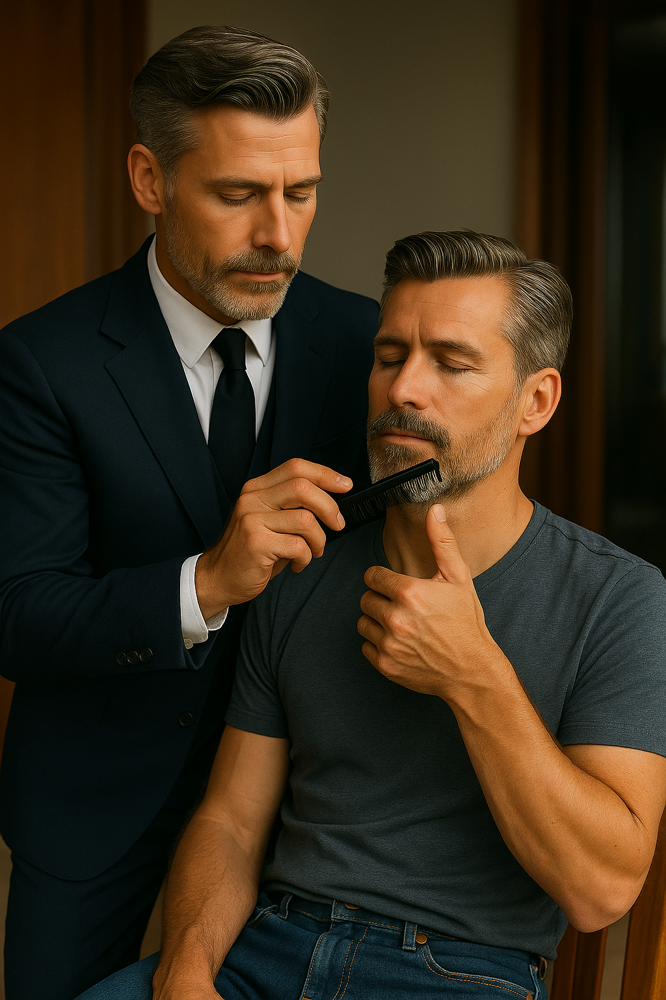

Вдохновлённые близнецы Антон и Марк на борту Dream Chaser
«Вдохновлённые близнецы» — история о том, как Антон, всегда элегантный и ухоженный, решил устроить совместную фотосессию с братом Марком, который, в отличие от него, привык к поношенной футболке, растрёпанным волосам и своим неизменным красным кедам. Антон берёт инициативу в руки — гладит рубашки, выбирает стильную одежду, делает укладку и помогает Марку раскрыть в себе новое чувство уверенности. В процессе подготовки Марк неожиданно понимает: сила не только в галстуке, но и в уважении к себе. Он остаётся верен своему стилю, но начинает следить за деталями. А когда они вместе смотрят на итоговые фотографии — сдержанные, стильные и по-семейному тёплые — Марк впервые говорит: «Ладно, можешь укладывать мне волосы… иногда». Так близнецы вдохновили друг друга — один на порядок, другой на свободу.
← Вернуться на главную